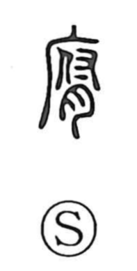

腐

Uncategorized
Kun: kusaru, kusareru, kusarasu | On: fu
to rot ・ to decay ・ to fester
Explanation
A phono-semantic character: the flesh element points to meat, while the phonetic 府 supplies the reading fu and evokes the viscera (zofu), parts prone to putrefaction. In the Shuowen it is glossed with the sense of ran and defined as stinking meat. From this core image the meaning broadened to “to rot, to decompose” and “to fester.” In contrast, 朽 refers specifically to the decay of wood, as in the compound fukyu (腐朽).